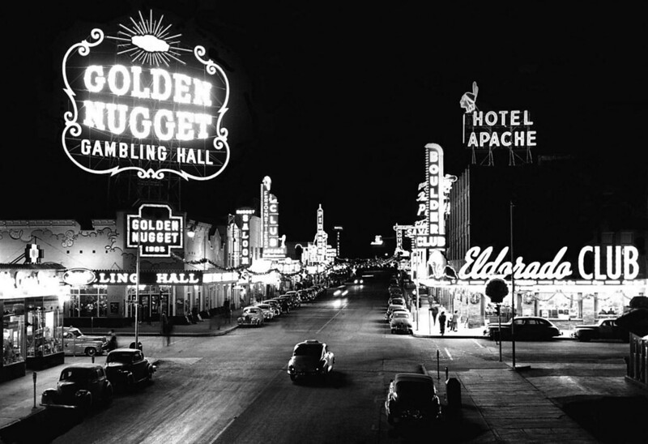

Zeitleiste – Die Entwicklung von Las Vegas
- vor 1900: Rastplatz und Handelsstation; später Mormonenstützpunkt.
- 1905: Gründung als Eisenbahnstadt.
- 1931: Legalisierung des Glücksspiels in Nevada.
- 1946: Eröffnung des Flamingo Hotels durch Bugsy Siegel.
- 1970er–1990er: Aufbau von Mega-Resorts und Wandel zur Touristenstadt.
- Heute: Weltmetropole für Entertainment, Sport und Technik.
Wusstest du schon?
In Las Vegas stehen über 150.000 Hotelzimmer – das ist Weltrekord!
Historisches Bild
Der Strip im Jahr 1952 – bescheidener Beginn einer riesigen Unterhaltungsmetropole.
Fazit
Las Vegas ist ein Paradebeispiel für Wandel. Vom staubigen Eisenbahnknoten zur schillernden Weltstadt – mit Glanz, Glamour und Geschichte.